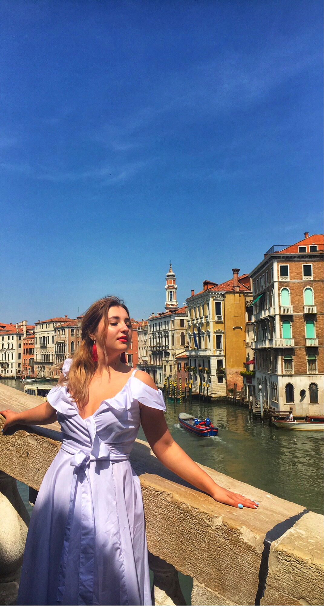
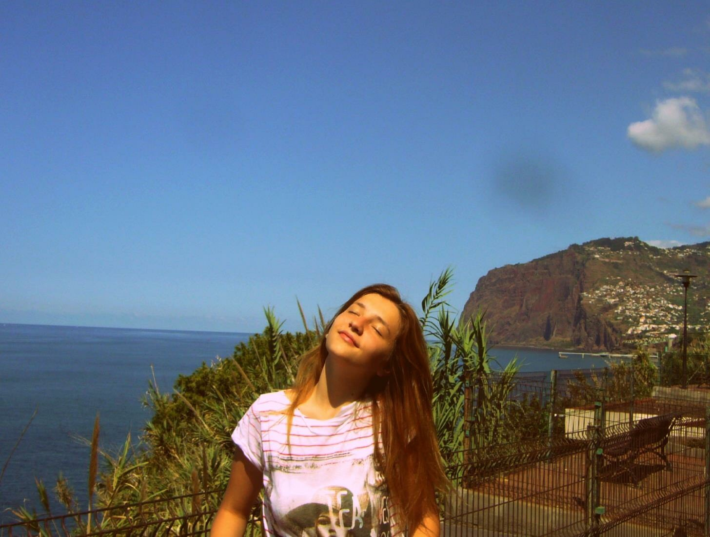
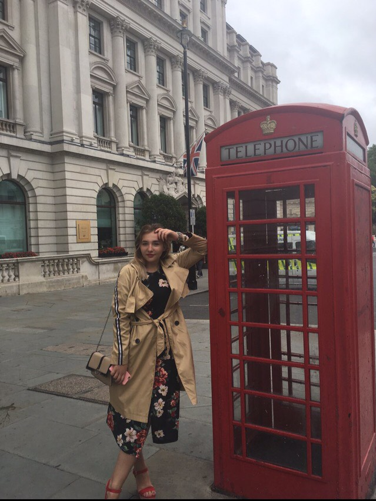

My Journeys 2018
Venice, Italy
Imagine the audacity of building a city of marble palaces on a lagoon – and that was only the start.The romantic city of Venice is located in the Veneto region of Italy — one of the northernmost states. This ancient and historically important city was originally built on 100 small islands in the Adriatic Sea. Instead or roads, Venice relies on a series of waterways and canals. One of the most famous areas of the city is the world-renowned Grand Canal thoroughfare, which was a major centre of the Renaissance. Another unmistakable area is the central square in Venice, called the Piazza San Marco. This is where you’ll find a range of Byzantine mosaics, the Campanile bell and, of course, the stunning St. Mark’s Basilica.
Milan, Italy

Milan is Italy’s city of the future, a fast-paced metropolis where creativity is big business, looking good is compulsory and after-work drinks are an art form.The destiny of Milan, like that of many of the world’s great cities, remains something of a historical paradox. There are powerful factors supporting the argument that Milan should have become the capital of a unified Italy, and this is the belief of many Milanese, in spite of the fact that the unity of Italy was actually born in Turin, rather than in Milan, in 1870. Milan, nevertheless, is the most industrious and vital city to have achieved prominence since the ancient land of Italy became aware of itself as a modern nation-state.
Verona, Italy

Verona is the city of love, where you can still find the places of the famous tragedy. It is so beautiful, romantic and exciting.I am very happe that I was there and I will come back there for sure.Best known for its Shakespeare associations, Verona attracts a multinational gaggle of tourists to its pretty piazzas and knot of lanes, most in search of Romeo, Juliet and all that. But beyond the heart-shaped kitsch and Renaissance romance, Verona is a bustling centre, its heart dominated by a mammoth, remarkably well-preserved 1st-century amphitheatre, the venue for the city's annual summer opera festival. Add to that countless churches, a couple of architecturally fascinating bridges over the Adige, regional wine and food from the Veneto hinterland and some impressive art, and Verona shapes up as one of northern Italy's most attractive cities. And all this just a short hop from the shores of stunning Lake Garda.
Lisbon,Portugal

As for me, Lisbon is the most beautiful European's capital city.Lisbon is the stunning capital city of Portugal, and is one of the most charismatic and vibrant cities of Europe. It is a city that effortlessly blends traditional heritage, with striking modernism and progressive thinking. As a holiday destination, Lisbon offers a rich and varied history, a buzzing nightlife and is blessed with a glorious year-round climate. This guide will provide an introduction to Lisbon, by answering some of the common holiday questions and providing links to further in-depth information.
Madeira, Portugal
Madeira is the most beautiful island in Atlantic Ocean.It is usually calles as Atlantic's perol. It is an island of internal spring and summer.Madeira is my second motherland, since I spent 8 years of my live there.Madeira is a beautiful and fascinating island that makes for a wonderful year round holiday destination. The island comprises of stunning natural scenery, with massive mountains, jagged cliffs, lush forests and delightful flower gardens. The people of Madeira are welcoming and hospitable, which reflects the laid-back and generous nature of the Portuguese.
London, United Kindgom




London is my passion.This is one of my favourite placed to be and to live.London is as much about wide-open vistas and leafy landscape escapes as it is high-density, sight-packed urban exploration. Central London is where the major museums, galleries and most iconic sights congregate, but visit Hampstead Heath or the Queen Elizabeth Olympic Park to flee the crowds and frolic in wide open green expanses. You can also venture further out to Kew Gardens, Richmond or Hampton Court Palace for beautiful panoramas of riverside London followed by a pint in a quiet waterside pub.
All information is a private property of site's owner.All rights reserved,2018.